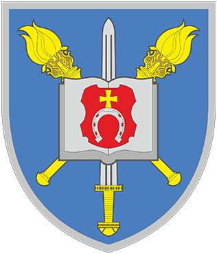

ВІЙСЬКОВИЙ ЛІЦЕЙ
НАЦІОНАЛЬНОЇ АКАДЕМІЇ СУХОПУТНИХ ВІЙСЬК
ІМЕНІ ГЕТЬМАНА ПЕТРА САГАЙДАЧНОГО
ШЕПТИЦЬКИЙ
/
ЛЬВІВСЬКА ОБЛАСТЬ
--:--
:--
—
■
ІНФОРМАЦІЙНИЙ ЕКРАН / ПОВІТРЯНА БЕЗПЕКА
ОЧІКУВАННЯ ДАНИХ
01 / УКРАЇНА
Карта повітряних тривог
ОБЛАСТІ ТА РАЙОНИ · АВТООНОВЛЕННЯ
Завантаження географічних даних…
ЧЕРВОНИЙ РІВЕНЬ
ЖОВТИЙ РІВЕНЬ / БПЛА
НЕ ЗАФІКСОВАНО
ЛІЦЕЙ
ОНОВЛЕННЯ
—
—
ДЖЕРЕЛО:
TRYVOHA.ONLINE
·
ГЕОДАНІ
04 / 2026–2027 НАВЧАЛЬНИЙ РІК
Розпорядок дня
—
ЗАРАЗ
—
Визначення поточного заходу…
07:00
НАВЧАННЯ
ЗАХОДИ
ХАРЧУВАННЯ
САМОПІДГОТОВКА / САМОРОЗВИТОК
22:00
ДЕМОНСТРАЦІЯ · НЕ РЕАЛЬНА ТРИВОГА